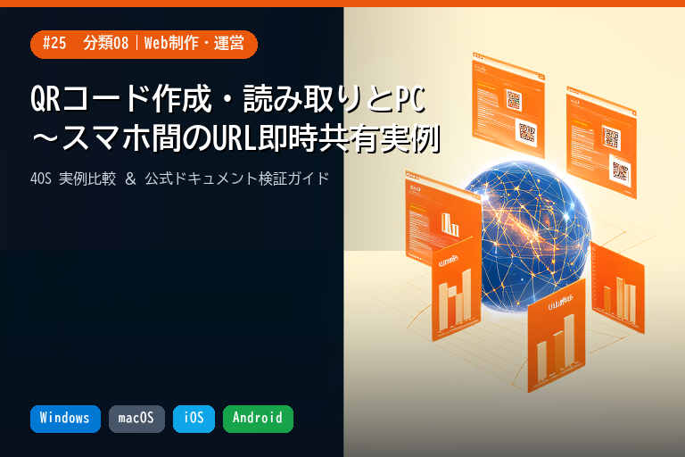

#25｜分類08: Web制作・ブログ・デジタルマーケティング 2026-11-23

QRコード作成・読み取りとPC〜スマホ間のURL即時共有実例｜Windows・macOS・iOS・Android
「PCで開いているWebサイトを、今すぐ手元のスマホで開きたい」「特定のページへ誘導するためのQRコードを、外部ツールを使わずにサクッと作りたい」といった場面は、Web制作やマーケティングの現場で頻繁に発生します。
しかし、OSやブラウザによって「標準機能でどこまでできるのか」はバラバラです。この記事では、Windows、macOS、iOS、Androidの4つの主要OSにおいて、外部アプリを極力使わずに標準機能だけで完結するURL共有・QRコード操作の最適解を徹底比較します。
4OS比較早見表
| OS / ブラウザ | QRコード生成機能 | 主要な即時共有手段 | 特徴 |
|---|---|---|---|
| Windows (Edge) | 標準搭載（メニュー内） | クリップボード / QR表示 | PCからスマホへのQR転送に強い |
| macOS (Safari) | 非対応（拡張機能推奨） | AirDrop | Appleエコシステム内での超高速共有 |
| iOS (Safari) | 非対応（ショートカット推奨） | Share Sheet / AirDrop | 共有シートを活用したアプリ間連携 |
| Android (Chrome) | 標準搭載（機種依存あり） | QRコード生成 / Share Sheet | モバイルでのQR生成・共有がスムーズ |
1. Windows 11 での実例手順
Windows環境では、Microsoft Edgeの標準機能を活用することで、ブラウザから直接QRコードを生成することが可能です。
実例手順
- Microsoft Edgeで対象のWebページを開きます。
- アドレスバーの右端にある「…」メニュー（またはアドレスバー内）をクリックします。
- メニュー内の「QR コード」を選択すると、現在のページのURLをQRコードとして画面に表示します。
- 表示されたQRコードをスマホのカメラでスキャンするか、画像として保存して共有します。
標準機能の制限事項
- 読み取り機能: Edge自体にはQRコードを「スキャン（読み取り）」する標準機能はありません。スマホ側のカメラアプリ等での読み取りが必要です。
- 直接送信: 「共有」ボタンから他のデバイスへ直接URLを飛ばす機能はないため、基本は「QR表示→スキャン」または「コピー→手動入力」のフローとなります。
よくあるトラブルと解決法
- 問題: QRコードが表示されない
- 原因・対策: Edgeのバージョンが古い可能性があります。「Microsoft Store」から最新版へ更新してください。改善しない場合は、拡張機能の「QR コードリーダー」を導入するのが確実です。
- 問題: スマホで読み取れない（エラーになる）
- 原因・対策: URLが長すぎる、またはHTTPSプロトコルが正しく認識されていない場合があります。「https://」を含めてコピーし直すか、ブラウザのキャッシュを削除してください。
- 問題: クリップボードから貼り付けられない
- 原因・対策: Windows 11の「クリップボード履歴」がオフになっている可能性があります。「Win + V」を押し、設定アプリの「システム > システムオプション > クリップボード」でオンにしてください。
2. macOS での実例手順
macOS（Safari）では、QRコード生成よりも「AirDrop」によるデバイス間連携が最もスムーズな標準機能です。
実例手順
- Safariで対象のWebページを開きます。
- メニューバーまたはアドレスバー付近にある「共有ボタン」（四角から矢印が出るアイコン）をクリックします。
- 「AirDrop」を選択し、近くにあるiPhoneやiPadを選択します。
- 相手のデバイスに通知が届き、即座にブラウザで開かれます。
標準機能の制限事項
- QRコード生成: Safariのメニューには標準で「QRコード」ボタンは存在しません。QRコードを画像として出力したい場合は、Chrome拡張機能等を利用する必要があります。
- 物理的共有: AirDropは近距離無線通信のため、遠隔地への共有にはURLのコピーが必要です。
よくあるトラブルと解決法
- 問題: AirDropが相手に表示されない
- 原因・対策: 受信側の設定が「すべての人」になっていない可能性があります。「システム環境設定 > 一般 > AirDrop」およびiOSの「コントロールセンター > AirDrop」を確認してください。また、BluetoothとWi-Fiがオンであることも必須条件です。
- 問題: SafariでURLをコピーできない
- 原因・対策: ページ保護や拡張機能の影響です。「Safari > 設定 > 拡張機能」で該当項目をオフにするか、別のタブで試してください。
- 問題: QRコード生成が必要だがAirDropは使えない時
- 原因・対策: macOSの「メモ」アプリにURLを貼り付け、「印刷 > PDFに保存」したあと、そのPDFからスクリーンショットを撮ることで簡易的な画像化が可能です。
3. iOS（iPhone / iPad）での実例手順
iOSデバイスでは、Safariの共有シートを活用するのが基本となります。
実例手順
- Safariで対象のWebページを開きます。
- アドレスバー右端の「共有ボタン」をタップします。
- 「メッセージ」や「AirDrop」を選択して送信するか、他のアプリへURLを転送します。
標準機能の制限事項
- QRコード生成: iOSの標準Share Sheetには「QRコード作成」メニューは存在しません。
- 自動化の壁: Apple公式の「ショートカット」アプリを使えば自動化可能ですが、ブラウザの純粋な標準機能のみでは非対応となります。
よくあるトラブルと解決法
- 問題: URLが長すぎて共有できない
- 原因・対策: iOSのクリップボードは標準では一度しか保持しません。再度Safariで開きコピーし直すか、「メモ」アプリに保存してテキストとして転送してください。
- 問題: QRコードを読み取れない
- 原因・対策: 「設定 > カメラ」で「QRコードスキャン」がオンになっているか確認してください（iOS 15以降は標準搭載されています）。
- 問題: Safariの閲覧履歴が混在している
- 原因・対策: 誤操作を防ぐため、「共有ボタン > その他の共有オプション」からURLをコピーし、メール等のアプリに貼り付けるフローを推奨します。
4. Android での実例手順
AndroidのChromeは、モバイル環境において最もQRコード生成に近い体験を提供します。
実例手順
- Google Chromeで対象のWebページを開きます。
- アドレスバー右端の「三点リーダー」メニューをタップします。
- 「QR コード」という項目を選択します（※機種によりUIが異なります）。
- 表示されたQRコードを他のアプリ（LINE、Messenger等）へ共有ボタンから送信します。
標準機能の制限事項
- スキャン機能: Chromeメニュー内のQRリーダーは機種依存が強く、標準搭載されていない場合があります。その場合はカメラアプリでのスキャンが必要です。
- UIの差異: PixelやGalaxyなどメーカーによって「QRコード」メニューの有無が異なるため、表示されない場合は「URLをコピー」して代替手段をとる必要があります。
よくあるトラブルと解決法
- 問題: Chromeメニューに「QR コード」が表示されない
- 原因・対策: バージョンや機種による仕様です。非表示の場合はGoogle Playストアから最新のChromeへ更新するか、URLをコピーして他のアプリで共有してください。
- 問題: URLが長すぎて共有できない
- 原因・対策: クリップボードの制限がある場合、「メモ」アプリに一度保存してから転送する方法が最も確実です。
- 問題: QRコードを読み取れない
- 原因・対策: カメラアプリの設定を確認するか、Google Lensなどの標準搭載アプリを活用してください。
よくあるトラブルと解決法（共通）
| トラブル内容 | 原因の切り分け | 推奨される対処法 |
|---|---|---|
| QRコードがぼやけて読めない | 画面の輝度が低い、または解像度が不足 | 画面の明るさを上げ、ズームして表示する |
| URLをコピーしても反映されない | クリップボード履歴の競合 | 他のアプリを一度閉じ、再度コピーを実行する |
| 共有先デバイスに反応がない | 通信環境（Wi-Fi/Bluetooth）の不備 | 両方のデバイスで通信設定を再起動する |
まとめ：快適なマルチOS環境を作るポイント
今回の比較で分かった通り、QRコードの生成やURLの即時共有は、Windows(Edge)とAndroid(Chrome)では標準機能として手厚くサポートされていますが、macOSやiOSではAirDropやShare Sheetといった「デバイス間連携」を優先する設計になっています。
これらをスムーズに使いこなすためには、以下のポイントを押さえておくと良いでしょう。
- 周辺機器の活用: PCとスマホを同じWi-Fi環境に接続し、Bluetoothをオンにしておくことで、AirDropやニアバイシェアの反応速度が向上します。
- ブラウザ拡張機能の導入: 標準機能に制限を感じる場合は、Chrome/Edgeの「QRコード生成」拡張機能を導入するのが最も汎用的な解決策です。
- Web制作・マーケティング視点での活用:
- 自身のブログやサイトを運用する際は、レンタルサーバーや独自ドメインを取得し、信頼性の高いURLを構築することが第一歩です。
- さらに、SEOツールを活用して適切なキーワードで上位表示させつつ、SNS等では今回紹介したQRコードや共有機能を使いこなすことで、PCからスマホへのスムーズな導線設計が可能になります。
- より高度な自動化（iOSショートカットなど）を学びたい場合は、Web制作教材などを活用して「自分のための最適フロー」を構築するのもおすすめです。
OSごとの特性を理解し、それぞれの強みを活かした共有フローを構築することで、日々の業務やWeb制作の効率は劇的に向上します。
参考文献・公式ドキュメント（一次情報ソース）
本記事の手順・仕様は以下の各OSおよびツールの公式ドキュメントに基づいています。OSアップデートによりメニュー名称や挙動が変わる場合があるため、最新仕様の確認にもご活用ください。